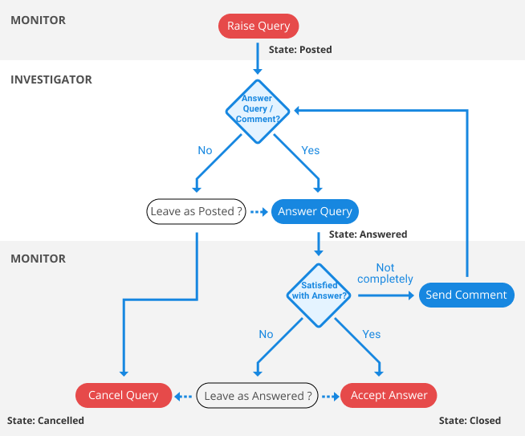
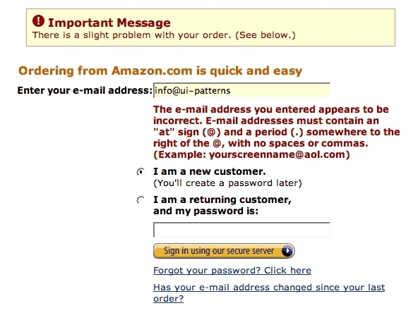
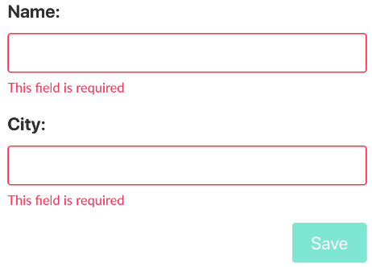
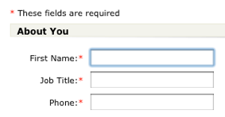
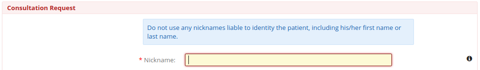
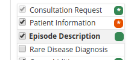
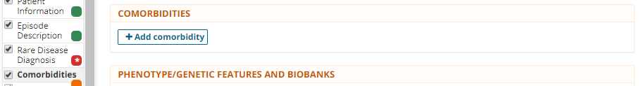
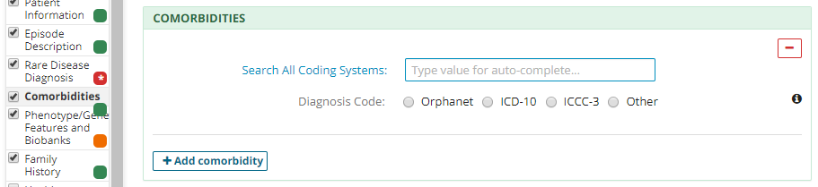

Making the Case for RAG
(or not)
Validation within the Clinical Insight System
Created by Turlough McAnespy
Presentation Purpose
This Presentation is intended for summarising some of the Validation concepts used within Clinical Insight, where they have come from and if they are fit for purpose or need to be re-designed.
CDM Background
Clinical data management (CDM) - a critical process in clinical research, which leads to generation of high-quality, reliable, and statistically sound data from clinical trials
Clinical Data Manager
- oversees development of data collection tools based on the clinical trial protocol
- ensures that data is collected, validated, complete, and consistent
- ensures that all data expected has been accounted for and that all data management activities are complete
- data can be Frozen to pause collection (reversible, verifiable, active queries)
- data is declared final by Locking a Casebook
Case report form design
- The (CRF) is the data collection tool for the clinical trial
- Electronic CRFs enable data to be typed directly into fields using a computer and transmitted electronically to Data Management
- Design of CRFs needs to take into account the information required to be collected by the clinical trial protocol
Data entry
- When an electronic CRF is in use data entry is carried out by staff at the investigative site
- When using a paper CRF the pages are entered by data entry operators
Validation rules
These check if the data "makes sense" and include;
- Presence check (very binary)
- Range check
- Type check
- Format check
- Length check
- Outlier check (a bit fuzzier)
- Data distribution check
Summary of CDM truths
- Data Manager is ultimately responsible for Validation
- Validation is defined by Validation Rules
- Rules (Checks) can be programmed into the system using Checks which will effect what happens next
Currently undefined 1
- What are the consequences of when a field fails a Check?
- Should automated Queries be triggered automatically? Ours current implementation allows for the Investigator to create a Query on a Soft Check fail, but is that not a scenario of lesser concern?
Currently undefined 2
- Do we consider all that all Rules should be defined by the Data Manager?
- If this isn't the case, is it clear when we should add Rules ourselves and how these might effect what happens next?
- Is it correct to have Required fields inside Optional Sections/Progressive Disclosure?
- Should % Valid/Complete be based on fields with Checks or all fields?
Validation Check Strategies
A validation check returning an Error (broadest sense) might;
- force a change in real time at the point of entry - not allow the Form to be Saved until the Data is made Valid - This is a Hard check
- or allow the Form to be Saved (a Soft check) and automatically trigger a Data Query
- or allow the Form to be Saved (signal a Soft check) and 'allow' the Data Entry to create a Query. Note: is this a form of correcting your own homework and needs to be supported with a higher transparency on Soft Check warnings?
- or allow the Form to be Saved (and prompt a review?) A Data Manager/Monitor might choose to raise a Data Query
Hard Checks
- Unfortunately, hard edit checks that keep the user from advancing to the next field or page, unless indicated criteria are met, are frequently overused
- Hard edit checks enforce restrictive rules that prevent the user from saving the form
- When this happens, users become frustrated and may enter incorrect data that meets the criteria just to be able to proceed
Data queries
Where data entered does 'not pass validation rules' then a data query may be issued to the investigative site where the clinical trial is conducted to request clarification of the entry.
When an item or variable has a query raised against it, it is said to have a “discrepancy” or “query”. Queries can be resolved in several ways:
- Automatic Query - by the Investigator correcting the error before interacting with the Query
- by Monitor/Data manager marking the Query as Closed / Canceled
Raised Data queries workflow

Realtime Validation
- If a Validation check prevents the Saving of the Form (a Hard check) we need a signal for this - it must correlate with the UI Pattern for Validation Error. A field requiring an Email is a typical example;

Realtime Validation
- If a Validation check allows the Form to Save but still has some form of 'Soft' Validation or Validation Warning, this also requires a signal
Web Validation Patterns
Form Data Validation - a set of web application functionality which checks it to see that the data entered by a User is correct, often performed on the Client-side in browser, before the data has been submitted to the server.
If the information isn't correct, it gives you an error message explaining what needs to be corrected.
Client-side Validation
In Web Applications the data tends to be modeled as;
- Invalid - the Form can't be Saved
- Valid - the Form can be Saved
Client-side Validation
Widely used approaches include
- signaling an Invalid field by border the field in Red
- disabling the submit button until all fields are Valid

Client-side Validation
Widely used approaches include
- another approach is use Asterisks to communicate the presence of a 'Presence Check'

Conflicting concepts
It may make sense that Invalid Data can exist in a Study Dataset (think of paper) until it is identified as such and addressed by a Data Manager
In a Web Applications it is typical to try and prevent the Form from being Submitted to the Database while Fields are Invalid.
The above concepts need to reconciled and may require the creation of 2 (or more) categories of Invalid Validation states (what is not at all ok and what is not ideal).
Clinical Insight Concepts
- Expected fields
- Cascading of Validation signals
- Section Validation signals within Section nav
Expected fields
Whereas red Astericks is used to communicate the presence of a Required field, an amber/orange triangle character is used to communicate the presence of a Expected field.
Cascading of Validation signals
In Clinical Insight we took the signal for a Invalid field and we cascaded it up. So where a field signals its Validation Error, the Section containing it also communicates the presence of the field with the Validation Error

Validation signals in Section nav
As well as letting the User select and navigate, the Section Navigation also attempts to communicate the Validation states of Sections as defined above. This may be a overreach.

Possible misstep 1
The Section is showing as having a Expected field, even though none is displaying. I think this kind of implied/dependancy Validation Warnings/Errors are a misstep. Logically justifiable but not intuitive.

Possible misstep 2
When the button is clicked to add a repeating concept - this is now showing as Valid even though nothing has been added. This might be a bug but that it exists is probably a sympton of the Validation rules being too complicated.

Comparisions with Castor
- Obvious competitor in that market
- Have had investment and spent it in the design of interface
- Document heavily and freely available
UI Similarities to Castor
- Phase (example Baseline, Follow-up) could be like CI Form
- Steps (ex. Physical Exam, Laboratory) could be like Sections
- Has Valid fields (Green)
- Has Optional fields (labels bolded) and Expected fields (Amber)
- Creates Hard Check fails (Red) in real-time
UI Similarities to Castor
- a Physical Exam with no empty (Amber) Required fields is automatically considered Completed (Green)
- a Follow-up Visit with no empty (Amber) Required fields is automatically considered Completed (Green)
- Castor show Steps (Sections) as Amber if any field is Amber including for an Open Query
Differences to Castor
- Uses Hard checks sparingly
- Has concept of 'Not Started' which switches on 1 field being entered
- They do not show a 'Report' (after creation) as Amber even when all fields within are Amber until one field is entered
- Castor use the Steps (Sections?) in a Modular way - you can leave bits out and there is no xxx
- Master > detail sitting inside a Vertical parent Master detail = Controversial
Take aways
- In this space their UI seems better polished rather than categorically different
- A bit more polish can close this gap without being disruptive to current Insight models
- With the exception of being able to Save as you go?
States needed
- Red (astericks) - the input is invalid or does not comply with the inclusion criteria for the study. This is accompanied by a red warning message.
- Amber (triangle?) - Data is required not valid data has been inputed and the 'form' can be saved
- Green - The input is valid or optional and the 'form' can be saved
Additional functionality as field
- Clear - override individual Radio buttons/Checkboxes
- Help info
- User missing - bypass checks?
- Queries
- Comment > Query Note
- Audit trail
Phase (Form)
- Grey - not started
- Amber - In Progress - When not all fields are Green
- Green - Completed
Phase (Form)
- Mark Phase as missing
- Lock
- Sign
- Mark as Verified
Record
- Progress - Blue bar over grey
- Full Green bar = 100%
Queries
- New
- Open
- Unconfirmed
- Confirmed
- Resolved
- Closed
Display logic v Validation logic
I think we should keep these separate as much as possible. The Validation should be attached at a field (low) level. The Section selection should act much as adding a page to a paper Form (ie be Modular). IE the page is there to see or not. Each field has a Validation rule or not.